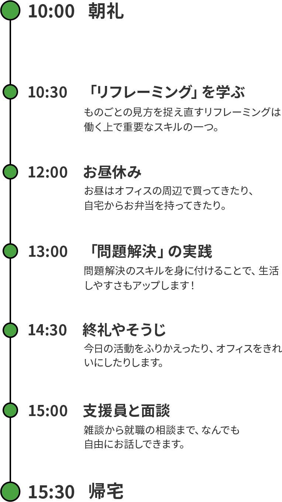

一緒に探せる、
自分だけのキャリア。
自分だけのキャリア。

ここは、あなたの「働く」をサポートする
ディーキャリア中野オフィスです。
ときにやさしく、ときに粘り強く。
自分らしい「働く」を
応援する人たちがいます。
まずは自分について知ること、
向き合うことから一緒にはじめてみませんか。
大橋 衛
新卒は中古車の買い取り販売。半年で退職。NPO法人に立ち上げ理事として参画。居酒屋でアルバイトしながら活動資金を得ていました。
デコボコベース入社から2年間は、就労移行支援事業で大人の発達障害の方の就職支援の中で、生活スキル、対人スキルを支援していました。合わせて、新規事業での参画であったため、テキスト、マニュアルを同時に使っていました。その後、そのスキルを活かし半年サポート業務として、直営店舗の質向上に従事しました。2年間の中野オフィスのマネージャーを経て、東京第一エリア長になる。現在も、精神保健福祉士として支援にも従事しています。
ゆかり（ふりかけ）
杉野 稚葉
心理学系の4年制大学を卒業し精神保健福祉士資格取得。学生時代からほぼ福祉畑で、就労支援に10年以上携わっています。
前職では事業の立ち上げから関わり数字を意識する機会が増えました。そこで自分の考えが偏ってるな、視野が狭いなと思うことが多々あり、経営の大学院に入り学びを広げてきました。支援の場面でも事業の運営という面でもさらに経験を重ねていきたいと思っています。
マネーフォワード（スマホアプリ）
森 祐太
新卒から10年以上福祉業界で働いています。
2歳から104歳までの支援等を実施していました。
経歴として、回復期リハビリテーション病院で7年間、レクリエーションワーカーとして働いていました。何か日常の中に楽しみを加えることが得意です。
その後、放課後等デイサービスにて2年間、運動療育を中心に支援していました。
現在はデコボコベース株式会社
ディーキャリア中野オフィスにて職業指導員として従事しています。
福祉×ITに興味があり、ディーキャリアではプログラミングのスキルを用いた支援を行っております。
ワークマンのTシャツ（仕事着）
呉 敏司
大学卒業後、世の中を豊かにしたいという思いがあり、ITの会社に入社し、特に目標もなく業務をこなす日々。
頑張った結果、このままIT会社で働いていても、楽しくない・自分の将来に生かせないと思い、転職を決意しました。家族にダウン症の妹がいるため、福祉事業に興味をもち、その中でも就労移行支援事業に従事したいと考え、デコボコベース株式会社に入社しました。
スーパーファミコン
楯 海飛
前職では直営拠点の拠点長を担当。クルーのマネジメントはもちろん、関わる全方位からのクレーム対応など、拠点でできることは全てやるというのが拠点の在り方でした。変化のうねりを乗りこなし素早く柔軟に効果的なアクションを打っていくことが求められました。
「凸凹が活きる社会を創る。」というVisionに共感し、実現すべくデコボコベースに入社しました。
ロジクールのマウス
河島 瑞希
大学卒業後、公的機関に入職。その後、新卒採用に特化した人事コンサルティング等
ベンチャー、アーリーステージの企業等、規模やフェーズの異なるステージで複数の仕事を経験し、現在にいたります。
社会人として働くと一日の約半分は「はたらく時間」、または「はたらくための時間」です。
その時間が充実したものとなったら、「しあわせ」の総量も増えるのではないでしょうか。
皆さんには、そのような「はたらく（仕事）」を通して、ぜひ自己実現（なりたい姿の実現）を目指していただきたいと思っています。
パラダイスティー（フレーバーティー）
矢嶋 祐里
作業療法士として約１０年病院で勤務。
徐々にマネジメント業務に関わるようになり、自分の担っているリハビリ関連の業務より、一緒に働くスタッフの働く・人生を応援したいと思うようになり転職を検討。妊娠・出産を経てより命の尊さを感じ、これから未来を担う方達への貢献がしたい、どんな方も生きやすい社会にしたいと思い、ディーキャリアへ転職いたしました。
タンブラー
ディーキャリアに参加すると、
まず初めにライフスキルコースで学ぶようになります。
どんな1日を送るのか、のぞいてみましょう。

ライフスキルコースを終えると、次はワークスキルコースです。
実際の業務のシミュレーションをしながら
自己理解を深めていきます。
最後にリクルートコースで就職活動に挑戦します。
これまで準備してきたことを生かして、
就職できるようにがんばりましょう。
中野オフィスでは、多くのことが学べます。
ものごとの捉え方を変えるリフレーミング、感情をコントロールするアンガーマネジメント、問題解決するための考え方。
そういった基礎的なスキルに加えて、自己理解、模擬業務を通しての特性理解を深めることができます。
IT系のカリキュラムだけではなく、自身の「なりたい姿」に照らして今後のキャリアプラニングも進めていけるため、幅広い方に実のある時間となるかと思います。
プログラミングを基礎から学ぶと、サイトやアプリなど、
さまざまな作品づくりに挑戦することができます。
また、ボードゲームやイベントの企画など、コミュニティの場づくりの機会もあります。
実際にトライしながら、なにが自分に向いていて、なにが苦手なのか発見してみましょう。
学んだことを一度で覚えることは難しいものです。
繰り返し学び、繰り返し練習し、また第三者からフィードバックももらいながら、
だんだんと自分のものにすることができます。
中野オフィスに通う間、働くためのスキルを身につけていきましょう。